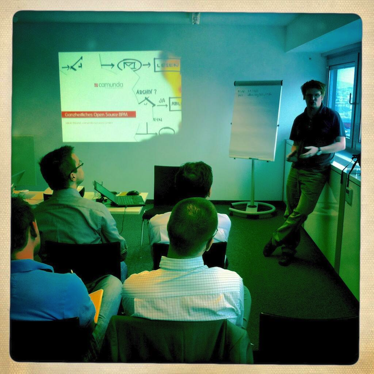

Warum beschäftigt sich eine so junge und bewegliche Firma wie camunda eigentlich mit dem “Alte-Männer-Thema BPM”? :-) So oder so ähnlich wurde Jakob Freund, Geschäftsführer der Firma camunda neulich beim Bier gefragt. Hört man ihm ein wenig zu - und wir hatten dazu auf der von plexiti organisierten Community Veranstaltung in Wien eine mehr als gute Gelegenheit - dann ist seine Antwort darauf eigentlich ganz einfach. Im Grunde kommt es eben darauf an, wie genau man das vielleicht für manche sperrige, aber doch wichtige, Thema anpackt.

camunda verbindet mit seiner kürzlich gelaunchten BPM Platform die Themen Java, BPMN und Open Source mit dem Anspruch bedingungsloser (ich darf das sagen) “Developer Friendliness”. Nicht vollmundiges “Zero Coding” ist der Slogan der Berliner BPMN Shooting Stars, sondern ehrliches Less Coding ist die nachdenkliche Hypothese. Ein Best-of-breed Ansatz, wie er von Geschäftsführer Bernd Rücker unlängst auch auf der SEACON erklärt wurde. Schön und gut. Aber warum wirklich sollte man in Erwägung ziehen von einer Mini-Firma wie camunda Dienstleistungen dazuzukaufen - und nicht doch von einem der vertrauenswürdigen, älteren Herren?

Für eine solche Kaufentscheidung wurde ja wohl noch kein Manager gefeuert, oder? Ich vermute, diese Gewissheit wird sich noch in diesem Jahrzehnt verflüchtigen. Das hat eine Menge zu tun mit Themen, die von vielen Entwicklern heute intuitiv verstanden werden, dem Management nach meinem Gefühl aber noch besser als bisher erklärt werden müssen. Weniger wichtig wird morgen sein, “alles aus einer Hand” zu bekommen und einen Generallieferanten haftbar machen zu können. Wichtiger wird hingegen die Beherrschung des Open Source Baukastenprinzips, die Fähigkeit hochwertige, von offenen Communities gepflegte und gerade wegen dieser Offenheit aufeinander oft besser als proprietäre One-Stop-Software abgestimmte, Komponenten mit relativ wenig “Glue Code” miteinander verknüpfen zu können. Und die eigenen softwaregestützten Geschäftsprozesse am Ende des Tages deshalb im Griff zu haben, weil man statt auf formale Sicherheit auf reale Sicherheit setzt. Gewissermassen auf die leichtgewichtige Seite der Macht:

Die Überlegung ist zumindest nicht ganz falsch. Eure Meinungen zu dieser von Jakob Freund präsentierten These würden mich ja sehr interessieren. Die ultimative Event-Serie zu diesem Thema gibt es übrigens demnächst im Rahmen einer Shootout Roadshow camunda vs. Oracle. Ich finde es von beiden Seiten extrem cool, sich hieran zu beteiligen. Nein, eigentlich finde ich es von Oracle noch cooler. Zugegeben, es kommt etwas unerwartet für mich - und zeigt vielleicht auch so ein bisschen wie sehr der “Enterprise”-Software-Markt bereits in Bewegung geraten ist.
Zum Abschluß möchte ich hier auch noch Jakob Freunds kompletten Satz an Folien anhängen, die er uns im Rahmen unserer Diskussion so nach und nach gezeigt hat:
Es war mir eine Freude, Jakob in Wien gehabt zu haben.

(Foto Credits für Rafael Cordones)